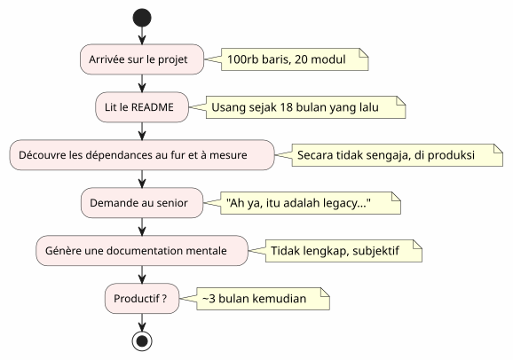
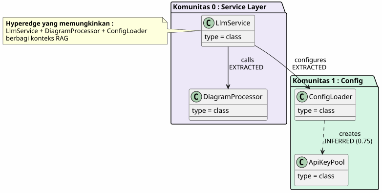
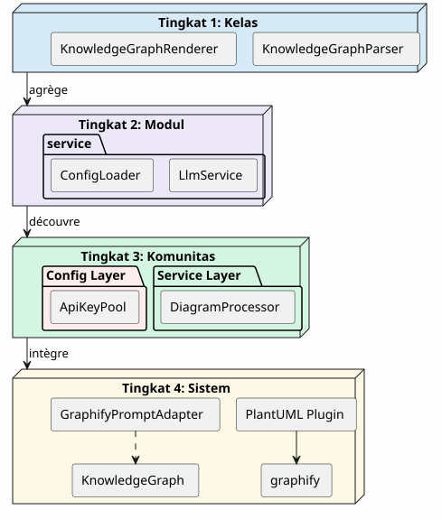
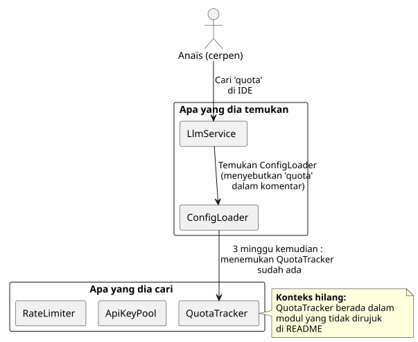
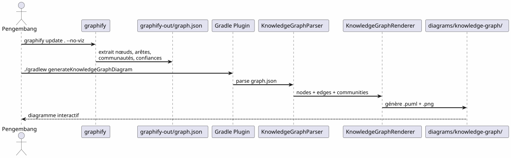
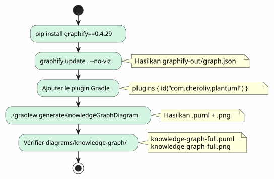
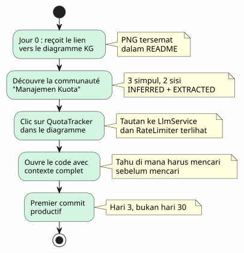
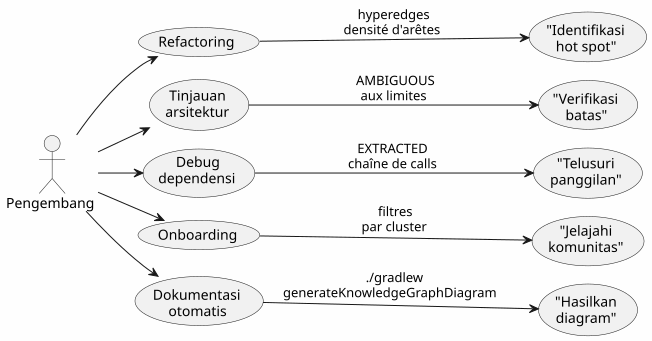

Knowledge Graph sebagai alat pemahaman codebase
Diterbitkan 20 April 2027
- Dinding onboarding
- Apa itu Knowledge Graph?
- 4 tingkat pemahaman
- Konteks yang hilang : skenario konkret
- Pipeline : kode sesuai permintaan dalam satu perintah
- Jenis tepi: apa yang dikatakan oleh kepercayaan
- 5 menit untuk menghasilkan Knowledge Graph Anda sendiri
- Nilai untuk onboarding: skenario Anaïs yang direvisi
- Nilai untuk navigasi harian
- Batas dan perspektif
- Kesimpulan
Kamu tiba pada sebuah proyek dengan 100.000 baris. Dua puluh modul, seratus kelas, dependensi tak terlihat, sejarah refactoring yang terlupakan. README menjanjikan arsitektur "microservices" tetapi kode menceritakan hal lain. Berapa lama agar menjadi produktif?tiga bulan— jika Anda beruntung. Dan jika sebuah peta interaktif kode yang dibuat secara otomatis bisa mengurangi hal itu menjadi tiga hari ?
- tik
-
[]
Dinding onboarding
Setiap pengembang telah mengalami situasi ini :
-
Hari 1: kami menunjukkan README (pembaruan terakhir: 18 bulan lalu)
-
Hari 3: Anda menemukan bahwa modul`billing`memanggil modul secara rahasia`notification`
-
Hari 7: seorang senior berkata "Ah ya, kelas ini sebenarnya melakukan dua hal, kita berencana untuk memisahkannya
-
Hari 14: Anda menyadari bahwa seluruh kecerdasan bisnis ada di`utils/LegacyHelper.java`— sebuah file yang tidak direferensikan di mana-mana

Masalahnya bukan kurangnya dokumentasi — inikekurangan kartu. Sebuah peta yang menunjukkan wilayah sebenarnya, bukan wilayah imajiner dari redesign terakhir.
Apa itu Knowledge Graph?
Sebuah graf pengetahuan adalah sebuah representasi terstruktur daritahuisi dalam codebase Anda :
| Entitas | Contoh dalam kode | Peran dalam grafik |
|---|---|---|
simpul |
kelas, fungsi, konsep |
Simpul grafik |
punggungan |
Panggilan, warisan, impor |
Koneksi antara dua node |
Komunitas |
Grup kelas terkait |
Kluster visual |
Jenis sisi |
diegekstrak, disimpulkan, ambigu |
Kepercayaan dalam hubungan |
Skor kepercayaan |
0.0 à 1.0 |
Keandalan tepi INFERRED |
hipersisi |
Hubungan 3+ simpul |
Kompleksitas arsitektur |

Perbedaan dengan diagram UML sederhana?Diagram UML menunjukkan apa yang diputuskan oleh pengembang untuk ditunjukkan. Knowledge Graph menunjukkan apa yang sebenarnya ada, termasuk dependensi yang tersembunyi dan konsep yang muncul.
4 tingkat pemahaman
Se Knowledge Graph memungkinkan navigasi keempat skala:

| Tingkat | Pertanyaan | granularitas | alat |
|---|---|---|---|
1 — Kelas |
Apa yang dilakukan oleh kelas ini? |
Baris kode |
IDE, perambulun |
2 — Modul |
Apa file-file dari modul ini? |
Berkas |
|
3 — Komunitas |
Apa konsep yang bekerja bersama? |
kelompok terkait |
Graf Pengetahuan |
4 — Sistem |
Bagaimana semuanya terhubung? |
Arsitektur global |
Diagram KG lengkap |
Tanpa Knowledge Graph, level 3 dan level 4 adalahtidak dapat diakses— atau setidaknya, subjektif dan usang
Konteks yang hilang : skenario konkret
Bayangkan seorang pengembang baru, Anaïs, yang datang ke proyek. Dia harus menambahkan fitur "quota tracking" untuk panggilan LLM.

Dengan Knowledge Graph, Anaïs akan melihat dalam5 menit:
-
QuotaTracker`terkait dengan`ApiKeyPool(tepiDiekstrak) -
RateLimiter`terkait dengan`QuotaTracker(tepidisimpulkan, kepercayaan 0.82) -
Ketiga simpul ini membentuk sebuahkomunitasManajemen Kuota
-
Sebuah hyperedge juga terhubung`LlmService`— titik masuk
Pipeline : kode sesuai permintaan dalam satu perintah
Pipeline Graphify + Plugin Gradle mengubah basis kode Anda menjadi diagram PlantUML dalamdua perintah :

nol LLM.Semua bersifat deterministik: kode yang sama, grafik yang sama, diagram yang sama. Dapat direproduksi, dapat di-versikan, dapat diakses secara offline.
Jenis tepi: apa yang dikatakan oleh kepercayaan

Jenis-jenis sisi sangat penting untuk onboarding:
-
EXTRACTED: Anda dapat menavigasi dengan tenang — ada di kode
-
disimpulkan(0.6-0.8) : kemungkinan benar, tetapi periksa sebelum refactor
-
disimpulkan(0.8+) : sangat andal — gunakan sebagai referensi
-
ambigu: perhatian, poin sensitif. Tanyakan kepada seorang senior.
5 menit untuk menghasilkan Knowledge Graph Anda sendiri

# 1. Installer graphify
pip install graphify==0.4.29
# 2. Générer le Knowledge Graph
graphify update . --no-viz
# 3. Vérifier le JSON
cat graphify-out/graph.json | jq '.nodes | length'
# → 47 nœuds
# 4. Générer le diagramme
./gradlew generateKnowledgeGraphDiagram
# 5. Filtrer par communauté
./gradlew generateKnowledgeGraphDiagram -Pplantuml.kg.community="service layer"
# 6. Limiter la taille
./gradlew generateKnowledgeGraphDiagram -Pplantuml.kg.maxNodes=20Nilai untuk onboarding: skenario Anaïs yang direvisi
Dengan Knowledge Graph, skenario Anaïs berubah secara radikal:

Knowledge Graph tidak menggantikan IDE— ia melengkapinya. IDE menampilkan di mana ; KG mengangkat mengapa dan bagaimana itu terhubung.
Nilai untuk navigasi harian
Onboarding bukan satu-satunya kasus penggunaan. Untuk seorang pengembang senior, Knowledge Graph digunakan untuk:

| Kasus penggunaan | Bagaimana KG membantu | Contoh konkret |
|---|---|---|
Refaktorisasi |
Visualisasikan hyperedge (tautan 3+) |
5 kelas ini selalu terhubung — ekstrak modul |
Ulasan arsitektur |
Deteksi AMBIGUOUS di perbatasan |
Panggilan antara billing dan notification tidak pasti |
Mendeebug |
Lacak string EXTRACTED |
Mengapa LlmService memanggil LegacyHelper ? |
Penerimaan karyawan |
Jelajahi komunitas dengan filter |
Apa itu 'service layer'? |
Dokumentasi |
Buat diagram di CI |
README selalu terbaru |
Batas dan perspektif
Sebuah Knowledge Graph bukan tongkat ajaib :
| Batas | Penjelasan | jalan pintas |
|---|---|---|
Kode statik saja |
Tidak ada runtime, tidak ada aliran data |
Melengkapi dengan jejak APM |
INFERRED mungkin salah |
Sisi yang disimpulkan memerlukan validasi |
Skor kepercayaan + tinjauan manusia |
Tidak ada semantika bisnis |
KG mengetahui "LlmService memanggil ConfigLoader", bukan "ini adalah titik entri auth |
Anotasi manual atau pasca-pemrosesan LLM |
Tanpa temporalitas |
Cuplikan kode, bukan perkembangannya |
Menghasilkan secara teratur + membandingkan versi |
Perspektif:
-
Perbedaan KGmembandingkan dua versi untuk melihat pergerakan komunitas
-
KG interaktif: klik pada sebuah simpul → buka IDE pada baris yang sesuai
-
KG historismemvisualisasikan perkembangan komunitas seiring waktu (hutang teknis yang berpindah)
Kesimpulan
Knowledge Graph mengubah sebuah tindakansendiri dan panjang(memahami basis kode) dalam satu tindakandibagikan dan cepat(melihat peta).
Bukan dokumentasi — ini adalahpemetaan. Sebuah peta yang diperbarui secara otomatis, yang menunjukkan wilayah nyata, dan yang memungkinkan setiap pengembang, baru atau senior, untuk ber-navigasi dengan yakin
pip install graphify==0.4.29
graphify update . --no-viz
./gradlew generateKnowledgeGraphDiagram3 perintah. 5 menit. Sebuah peta dari basis kode Anda.